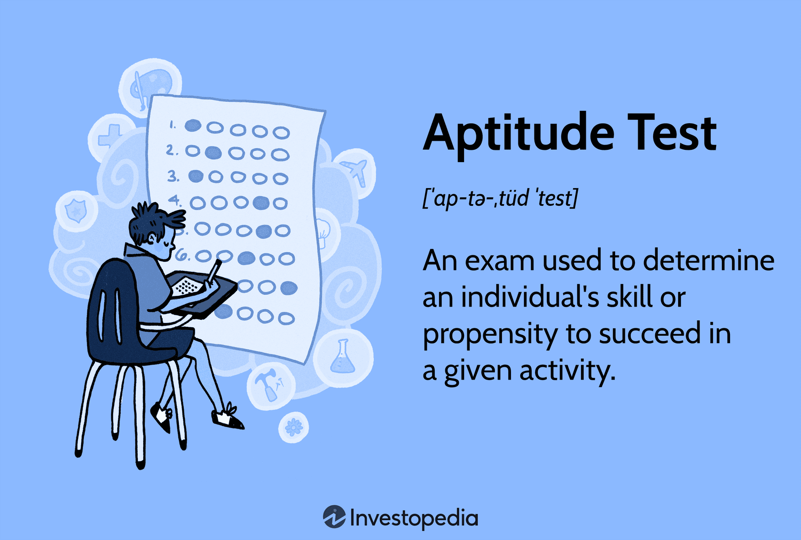

Jagan's Role - Aptitude Test Resources
Role Details
Jagan plays a crucial role in collecting resources for common aptitude tests. He gathers past aptitude test papers, providing the team with a robust practice ground. This preparation ensures everyone is well-prepared to tackle the aptitude rounds in interviews.

Process of the Role
Jagan's process involves:
- Collecting past aptitude test papers
- Creating practice materials for team members
- Regularly updating the resource database
Outcomes of the Role
The outcomes of Jagan's role include:
- Providing a solid foundation for aptitude test preparation
- Enhancing team members' problem-solving skills
- Boosting confidence in tackling aptitude rounds
Back to Dashboard